Designing an inclusive trading platform for a $7.5T market
An accessibility redesign completed at Birmingham City University under Professor Chris Creed, benchmarked against TradingView and MetaTrader 4, adding voice commands, tactile feedback and real-time alerts so traders with disabilities aren't locked out of a market that never closes.
The problem
The global financial market moves $7.5 trillion a day, involving banks, institutions and individual traders. But the platforms that market runs on weren't built with accessibility in mind. Auditing TradingView and MetaTrader 4, the two platforms most traders actually use, turned up the same failures on both: only a mouse works, keyboards can't navigate the platform at all; there's no voice-to-speech support; news alerts show up as an unlabelled clickable icon instead of a real notification; and neither offers a way to auto-calculate lot sizes, collaborate on analysis, or otherwise reduce the manual load on a trader's attention.
For a deaf trader, a trader with glaucoma, a trader who lost both arms, or a trader managing executive-functioning challenges, none of that is a minor inconvenience, it's the difference between being able to trade at all.
My role
I led this end to end as a product design and UX research project at Birmingham City University, supervised by Professor Chris Creed, whose own research focus on assistive technology for disabled people shaped the rigor this project was held to: auditing existing platforms, building personas and scenarios around real disability-specific trading needs, designing a WCAG-aligned system and high-fidelity prototype, and evaluating it with real traders through moderated usability testing.
Research
To ground the redesign in real needs rather than assumptions, I developed four personas, each representing a different disability and a genuinely different relationship to trading:
- Queen Peters — born deaf, an experienced trader who misses 60% of trade-relevant news and price events because they arrive as sound-based alerts she can't hear.
- Sarah Ruben — lives with executive-functioning challenges that make it hard to stay organised, track trades, or remember to set stop-loss and take-profit levels.
- Abdullah Saraf — a mechanical engineer who lost both arms in a car accident, needing customisable hotkeys and voice-activated, hands-free trading.
- Kala Andrew — a trader with glaucoma, needing text-to-speech, alt text, high-contrast themes and full keyboard shortcuts to keep trading as his vision changed.
Five scenarios followed from these personas, mapping specific trading routines, like Queen teaching other traders around her missed alerts, or Kala trading intraday sessions with a higher-contrast, larger-text chart view, onto concrete design requirements.
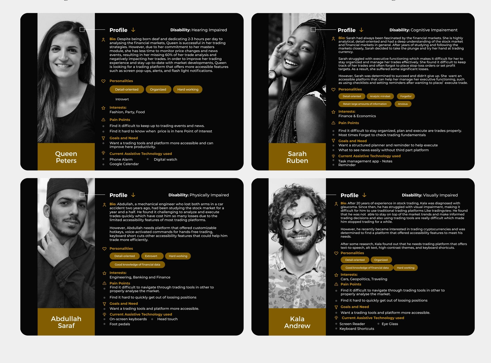
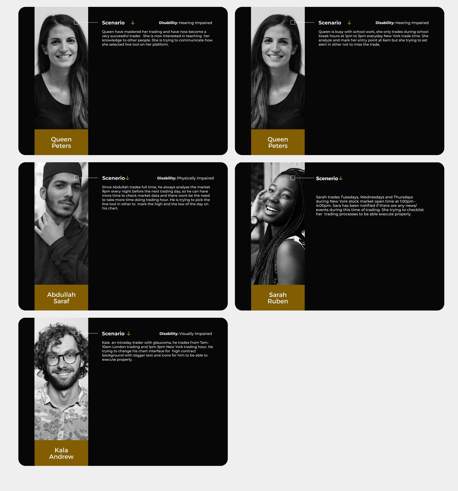
Design system
Early paper sketches prioritised the left side of the dashboard for core trading tools, based on the finding that users spend roughly 80% of their time viewing the left half of a page and only 20% on the right, with system features placed top, right and bottom where they stay visible without competing for attention.
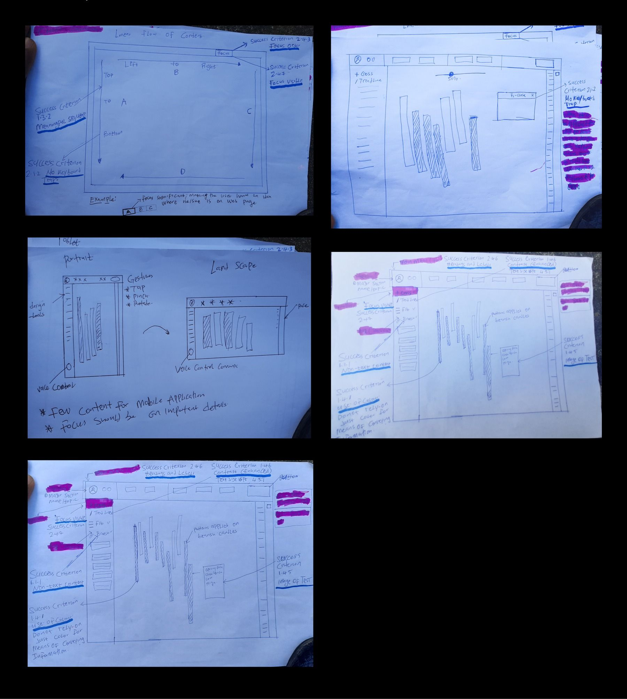
The visual system runs in both dark and light modes with colour codes tuned to meet WCAG 1.4.3 contrast requirements, set in Montserrat, a sans-serif chosen specifically for its legibility on screen for users with visual impairments.
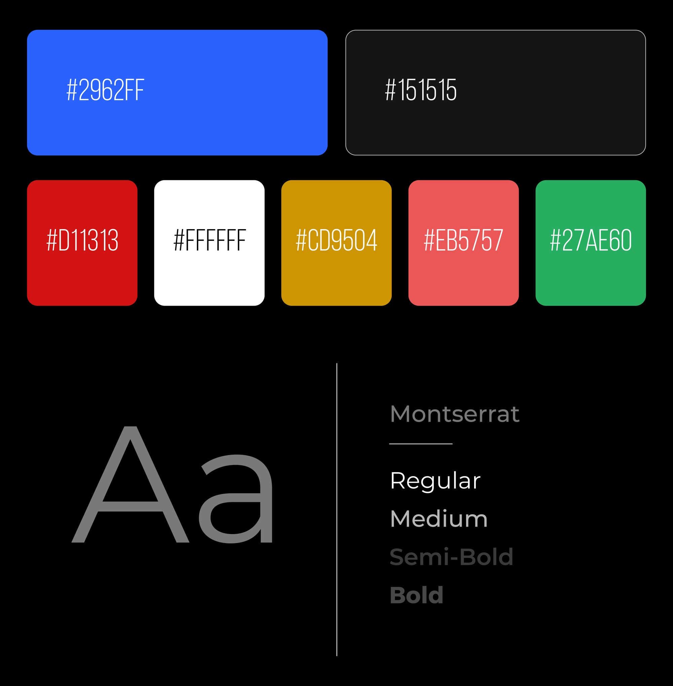
Redesign
The high-fidelity prototype translated every persona's needs into a real feature, organised around the four disability groups the research was built on.
For visually impaired traders
A dark mode reduces eye strain and light sensitivity for users with glaucoma. Financial data is represented with patterns as well as colour (WCAG 1.4.1), addressing colour blindness directly. Charts can be zoomed up to 500% without losing content or functionality (WCAG 1.4.4), and non-text elements like icons are built to WCAG 1.1.1 so they're comprehensible to assistive technology.
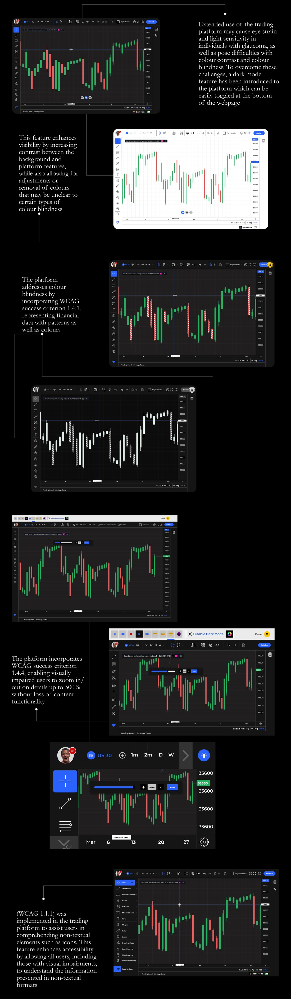
For physically impaired traders
A voice recognition system lets a trader without arms select tools and execute trades hands-free, using commands like "Select" and "Trend Line." Focus Order (WCAG 2.4.7) and Focus Visible (WCAG 2.4.3) keep keyboard and screen-reader users aware of exactly where they are on the page, and WCAG 2.1.2 guarantees no keyboard trap, any modal a user gets stuck in can be escaped with a single "Esc" press.
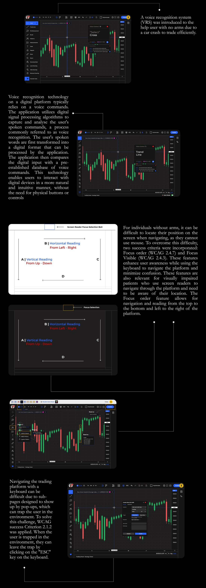
For traders with cognitive impairments
An order checklist acts as an external memory aid for confirming trade rules before execution, and a sticky-notes tool lets traders document study guides and trade processes they can refer back to, both aimed squarely at the executive-functioning challenges Sarah's persona surfaced.
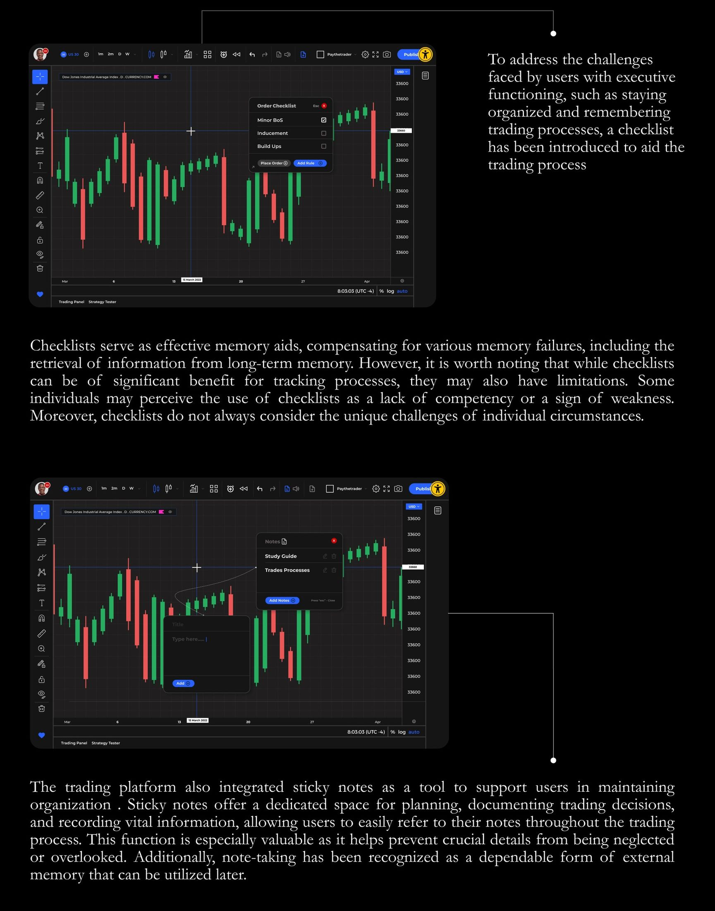
For traders with auditory impairments
Speech-to-text was built into the platform's call feature, so a deaf trader can read a live conversation in real time instead of relying on lip-reading. Critical alerts, like a major economic release or a price hitting a key level, also trigger haptic vibration on an Apple Watch, so time-sensitive information doesn't depend on hearing a sound at all.
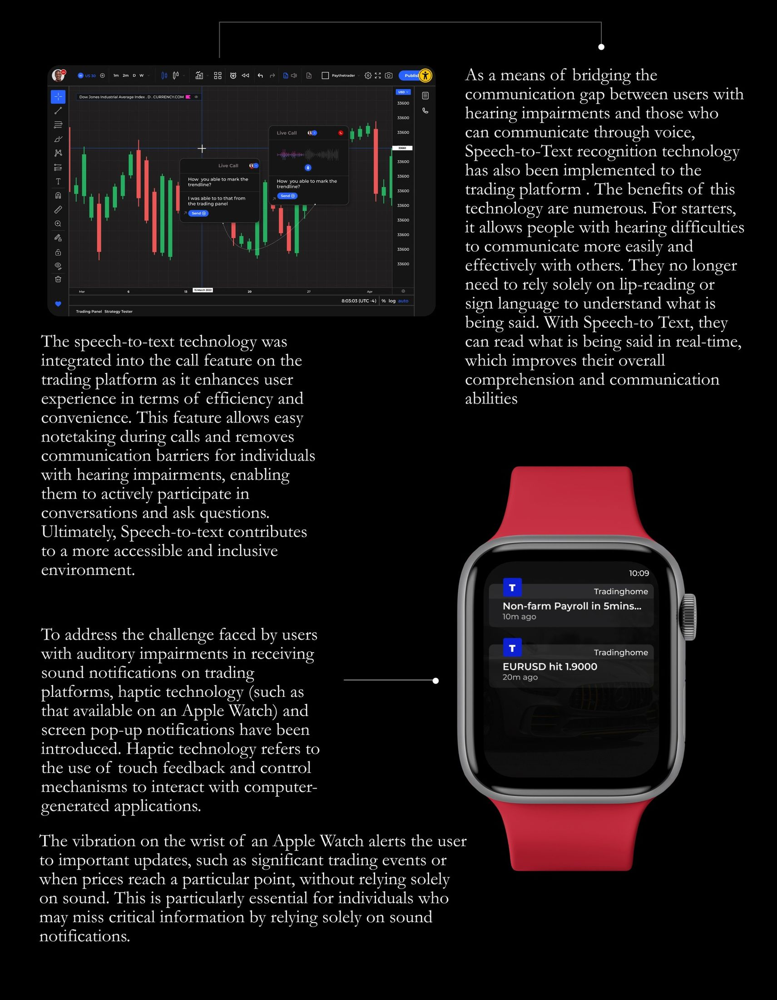
Across desktop and mobile
Every touch target meets a 44x44px minimum (WCAG 2.5.5), text and icons resize without losing functionality (WCAG 1.4.10), and the mobile app layers in standard gestures, shake to screenshot a chart, pinch to zoom, rotate to switch orientation, so the platform holds up outside the desktop.
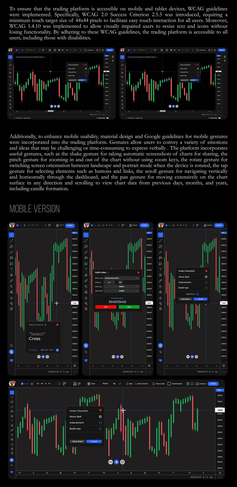
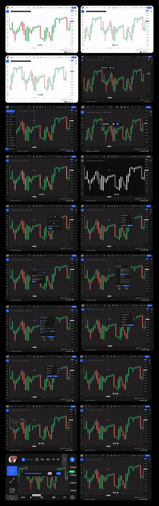
Evaluation
I tested the prototype using a think-aloud cognitive technique with 5 traders (2 women, 3 men), conducted over Zoom since gathering financial traders in person wasn't practical. Each trader worked through 5 tasks: switching from light to dark mode, locating and using zoom in/out, placing a trade order and checking it against the trade checklist, locating and using voice control, and locating and using the call feature.
Task completion times were logged and analysed in SPSS across all 5 participants and tasks. After completion, each trader filled out a System Usability Scale survey, returning an average score of 74.5, meaning the platform was perceived as usable and intuitive, with room to grow rather than a finished product.
Feedback was genuinely mixed. Traders liked how familiar the platform felt next to tools they already used, appreciated not needing a separate calculator for risk, and responded well to the checklist. The clearest criticism was that the voice-control icon, a speaker, was easy to mistake for something else; testers said a microphone would read more clearly. Some also noted the prototype wasn't fully built out, which limited how confidently they could judge it.
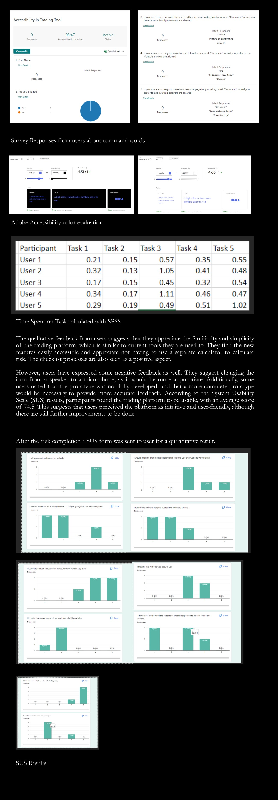
Iterating on the feedback
The clearest actionable finding, the voice-control icon reading unclear, went straight into the design: the speaker icon was replaced with a microphone icon, a small change that directly answers what testers actually said rather than what I assumed they'd understand.
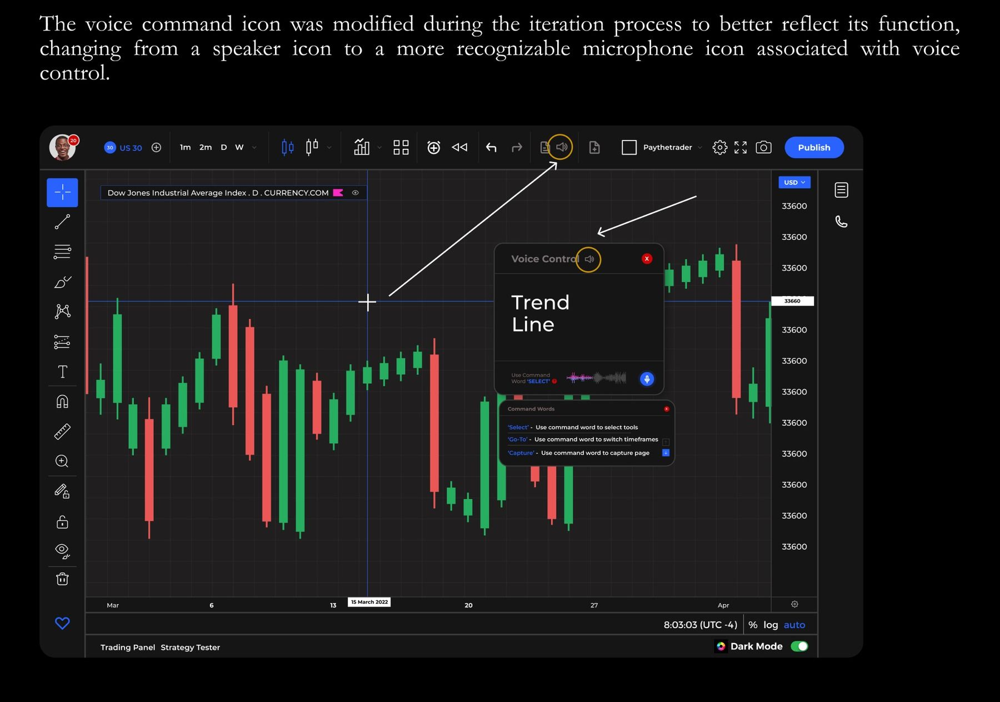
Reflection
Designing for four different disabilities at once means there's no single "the user" to hold in your head, a feature that helps Kala can be invisible to Abdullah, and a fix for Queen doesn't touch Sarah's problem at all. The checklist that made Sarah's workflow easier is a good example: it's genuinely useful, but it also risks reading as patronising to someone who doesn't see themselves as needing one. A SUS score of 74.5 is a solid result, not a finished one. If I extended this project, I'd want a second testing round with a larger, disability-matched sample, testers who actually share the impairments the personas were built around, rather than five general traders, since that's the gap between a usable prototype and one that's actually validated for the people it's meant to serve.